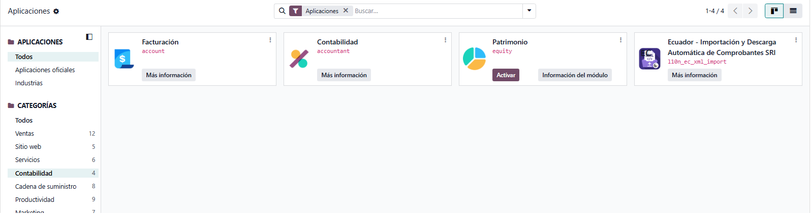
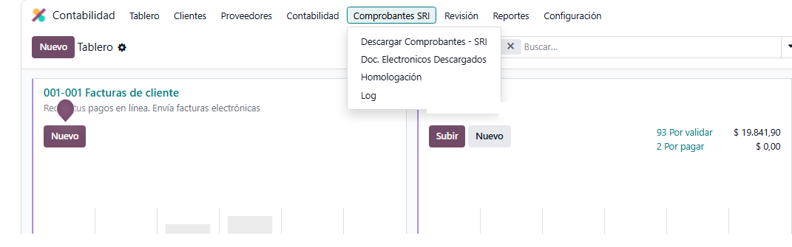
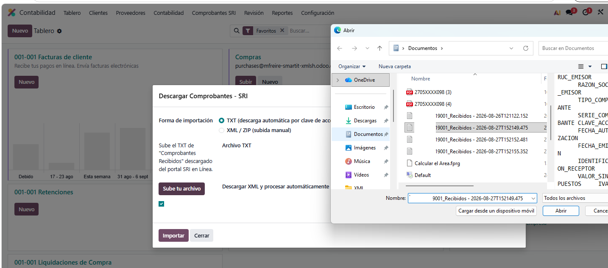
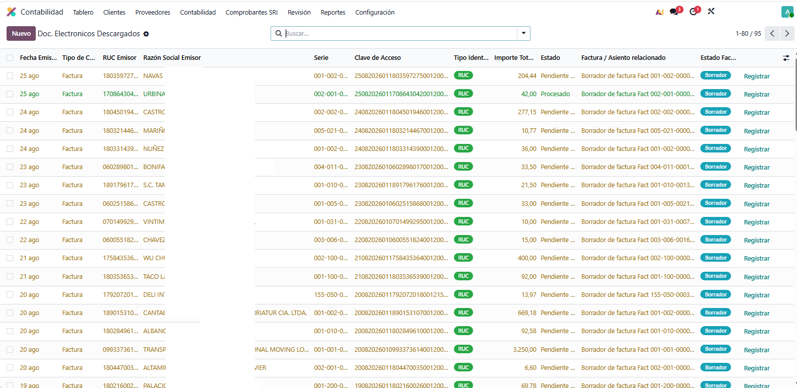
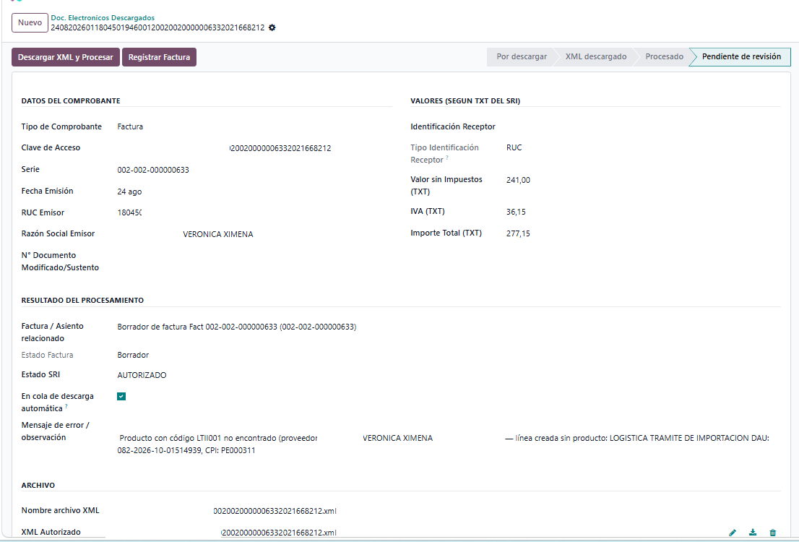
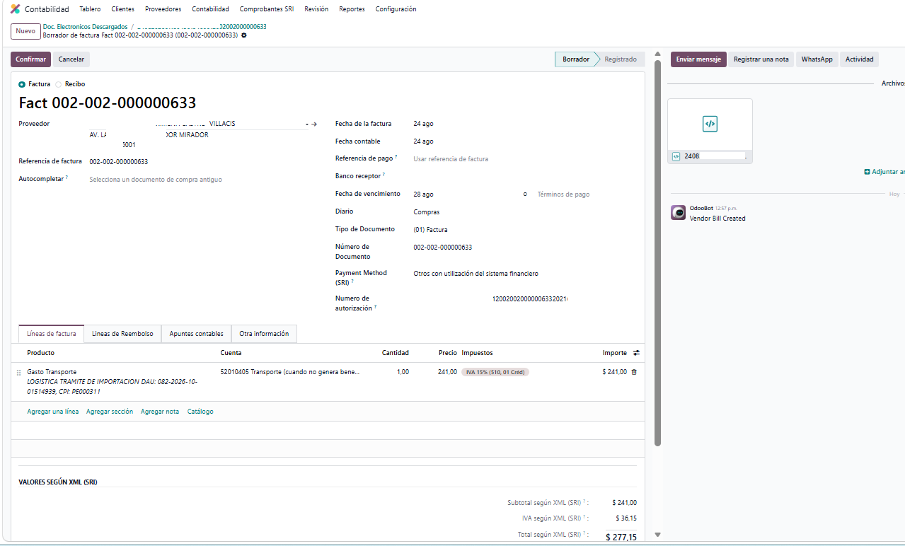
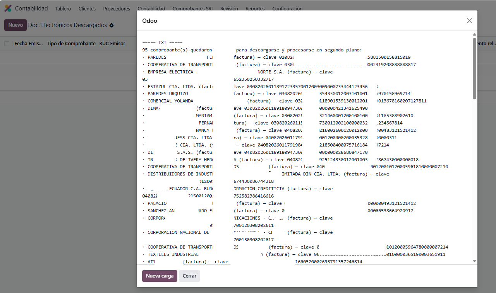

Descarga, importa y concilia facturas de proveedor, notas de crédito/débito y retenciones electrónicas del SRI directamente en Odoo, sin digitar nada a mano.
(Video de demostración pendiente de agregar.)
Sube el archivo TXT de "Comprobantes Recibidos" del portal SRI en Línea. Por cada clave de acceso nueva, el módulo consulta el Web Service de Autorización del SRI, descarga el XML autorizado y crea el documento en Odoo — en segundo plano, sin bloquear tu sesión aunque el archivo traiga cientos de filas.
¿Ya tienes los XML autorizados? Súbelos uno por uno o en un ZIP. El módulo detecta solo si cada archivo es factura, nota de crédito, nota de débito, liquidación de compra o comprobante de retención.
Las retenciones de cliente se concilian automáticamente contra la factura de venta correspondiente, validando tanto el número de documento como el RUC de quien retiene — para no aplicar por error una retención al cliente equivocado.
Recuerda automáticamente qué producto de Odoo corresponde a cada código de producto que use un proveedor en su XML, para que las próximas compras se carguen solas.
El XML autorizado de cada comprobante queda adjunto de forma permanente al documento contable que genera en Odoo (factura, nota de crédito/débito o retención). Así se cumple con la obligación del SRI de conservar los comprobantes electrónicos como respaldo, disponibles de inmediato ante cualquier inspección o requerimiento tributario, sin depender de archivos sueltos fuera del sistema.







account y l10n_ec_edi instalados.¿Dudas o necesitas ayuda con la instalación? Escríbenos a través de nuestro sitio web.